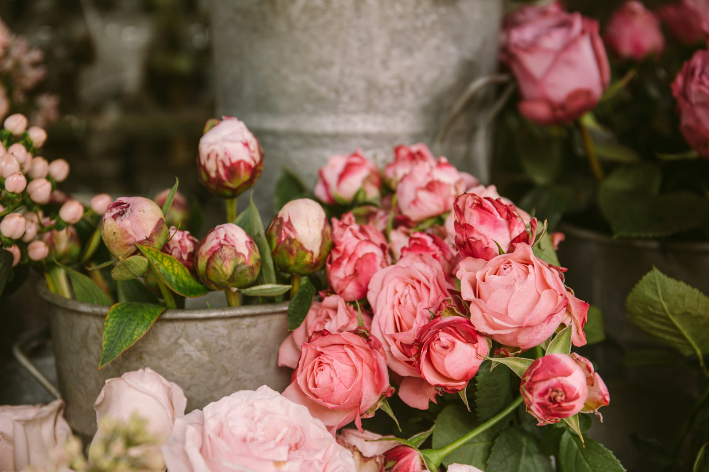
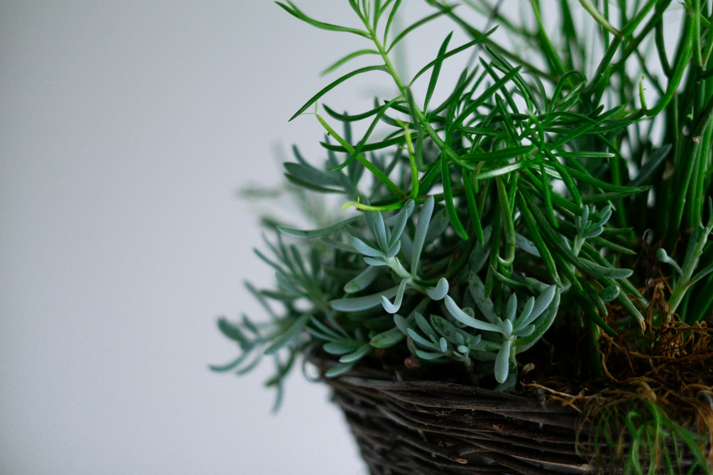
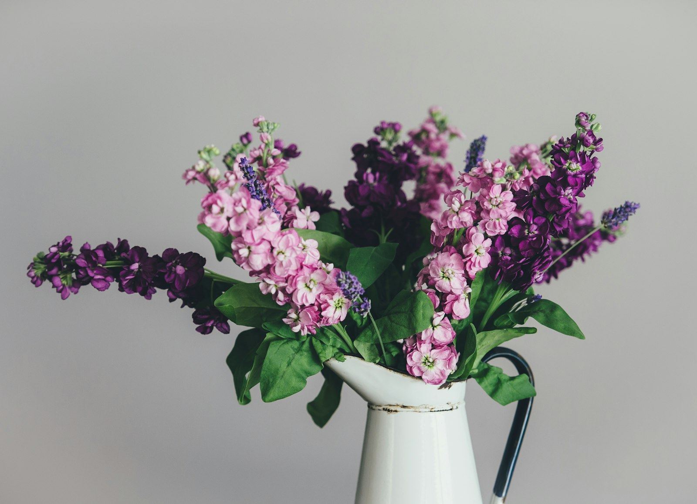

Rose Garden Sampler Quilt
Quilting
Posted Mar 14
Retired schoolteacher, grandmother of four, and lifelong fabric hoarder. I learned to quilt at my grandmother's knee in the Blue Ridge foothills and have been stitching ever since. I love sharing patterns that beginners can actually finish — and tea, lots of tea.




Commented on Eleanor Whitfield's project “Hand-Quilted Star Coverlet”
“Eleanor, those mitered corners are exquisite — what weight batting did you use?”
2 hours ago · 10:42 AMApplauded “Wisteria Watercolor Bookmark Set” by Harold Pemberton
4 hours ago · 8:15 AMSaved the pattern “Cathedral Window Pin Cushion — Step-by-Step”
Earlier today · 7:02 AMFollowed Beatrice “Bea” Lansford — natural dyer in Vermont
Yesterday · 6:48 PMCommented on the discussion “Best thread weight for hand quilting?” in Threadkeepers Guild
“Sweet sixteen Aurifil is my forever favorite — never tangles.”
Yesterday · 3:21 PMApplauded 6 projects in the “Spring Wreath Swap 2024” gallery
Yesterday · 11:09 AMSaved “Slow-Stitched Sashiko Coasters” by Hiroko Tanaka to her Weekend Projects scrapbook
2 days ago · 9:30 PMFollowed the group Blue Ridge Quilters Circle — 348 members
2 days ago · 5:14 PMPublished a new pattern “Hexie Flower Garden — Beginner Friendly” · 38 makers already started
2 days ago · 10:00 AMCommented on Walter Greene's project “Whittled Walking Stick — Year One”
“Walter, the chip carving on the handle is just stunning. My late husband would have loved this.”
2 days ago · 8:42 AM